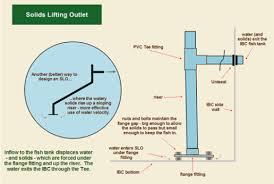

O segredo de um sistema de aquaponia produtivo é a remoção eficiente dos dejetos sólidos. A ideia central é que a água arraste as fezes e restos de ração para os filtros, retornando purificada para os peixes.
O Sistema de Overflow (Transbordo)
Para garantir que a sujeira do fundo seja removida sem precisar de furos perigosos na base do tanque, utilizamos o sistema de Overflow. Ele funciona através da pressão hidrostática: à medida que a água entra no tanque, ela força a saída da água do fundo pelo cano interno.
 Segurança máxima: saída de água posicionada na parte superior do tanque.
Segurança máxima: saída de água posicionada na parte superior do tanque.
RISCO TÉCNICO: Muitos iniciantes furam a base da caixa d'água. Isso é perigoso. Um vazamento em uma flange inferior pode drenar todo o sistema em minutos. Com o Overflow, o dreno acontece por cima, mantendo um nível de segurança constante para suas Tilápias.
 Mecânica do dreno: a água é "sugada" do fundo em direção ao transbordo.
Mecânica do dreno: a água é "sugada" do fundo em direção ao transbordo.
Equipamentos para Manutenção de Performance
Estes são os itens que facilitam a limpeza técnica do seu tanque:


Dicas de Engenharia para o Overflow:
- Dentes de Sucção: O cano interno deve ter aberturas no fundo para permitir a passagem dos dejetos.
- Furo de Respiro: Sempre faça um pequeno furo na curva superior do overflow para evitar o efeito sifão que esvaziaria o tanque.
- Manutenção: Mesmo com overflow, realize uma TPA mensal para renovar a biologia da água.

O detalhe técnico que evita acidentes e garante a oxigenação.